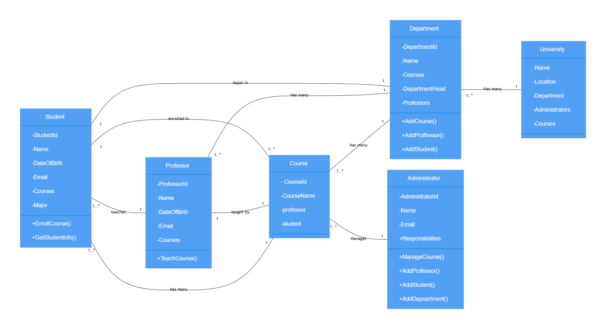
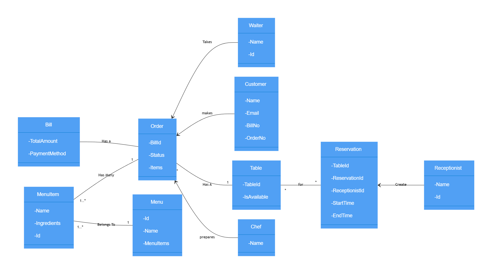

Ashish’s Wiki
This wiki is a curated collection of insights, best practices, and learnings from my journey in software engineering. It covers key concepts and code examples aimed at deepening technical understanding.
Links
[Website] [Notes] [Uses] [Todos] [Listens] [Movies] [Shows] [Books]
Topics
Main topics covered by this wiki:
Clean Code
Conventional Commits
Format
<type>(<scope>): <description>
- feat: A new feature
- fix: A bug fix
- docs: Documentation changes
- style: Code style changes (formatting, etc.)
- refactor: Code refactoring
- test: Adding or modifying tests
- chore: Routine tasks, maintenance, etc
Examples
- fix(login): correct password hashing issue
- fix(cart): prevent items from duplicating on refresh
- fix(profile): resolve avatar upload error
- fix(navbar): align links correctly on mobile
- fix(modal): close button not responsive
- fix(button): make hover effect consistent
- fix(api): handle missing user ID in requests
- fix(api): correct error codes for unauthorized access
- fix(api): prevent null values in response
- fix(db): ensure indexes are used for faster queries
- fix(db): correct foreign key constraint in orders
- fix(db): handle data migration for older records
- fix(auth): resolve token expiry handling
- fix(payment): correct tax calculation logic
- fix(file-upload): prevent large files from causing timeout
- fix(css): adjust padding for form inputs
- fix(js): prevent null pointer error on page load
- fix(svg): correct icon alignment in header
- fix(store): ensure cart state persists on refresh
- fix(state): prevent duplicate entries in wishlist
- fix(redux): correct initial state for auth
Data Structures
Array
Inserting a new item is quite slow // O(N)
Searching is quite fast with binary search // O(logN)
removing an item is slow //O(N)
Graph
Hash Table
Linked List
Inserting a new item is very fast //O(1)
Searching is sequential //O(N)
Removing an item is fast because of the references
Queue
Stack
Time Complexity
List of common complexities
In computer science, the performance of program is determined by total time and space taken to execute the program with respect to input.
Commonly used asymptotic notations for time and space complexity are below
- Omega notation (Best Case)
- Theta notation (Average Case)
- Oh notation (Worst Case)
We mostly consider Oh notation because it will give the execution time in the worst case.
Common Big O’s
Let say if the input is N = 10 then the time taken by common asymptotic notations can be viewed from below table.
| Name | Notation | Time |
|---|---|---|
| Constant | O(1) | 1 |
| Logarithmic | O(log N) | 3.3219 |
| Linear | O(N) | 10 |
| Linearithmic | O(N log N) | 33.219 |
| Polynomial | O(N^2) | 100 |
| Exponential | O(2^N) | 1024 |
| Factorial | O(N!) | 3628800 |

O(n) Linear Time
An algorithm is said to run in linear time if its time execution is directly proportional to the input size, i.e. time grows linearly as input size increases.
Consider the following examples, below I am linearly searching for an element, this has a time complexity of O(n).
int find = 66;
var numbers = new int[] { 33, 435, 36, 37, 43, 45, 66, 656, 2232 };
for (int i = 0; i < numbers.Length - 1; i++)
{
if(find == numbers[i])
{
return;
}
}
O(log n) Logarithmic Time:
An algorithm is said to run in logarithmic time if its time execution is proportional to the logarithm of the input size. Binary search and all the operations of binary search tree have logarithmic time complexity has we discard half of the data on every iteration.
O(n2) Quadratic Time
An algorithm is said to run in quadratic time if its time execution is proportional to the square of the input size.
Tree
Binary Search Tree
Binary search tree is a node based binary tree data structure.
Introduction
- The left subtree of a node contains only nodes with keys less than the node’s key.
- The right subtree of a node contains only nodes with keys greater than the node’s key.
- If we goto the left as far as possible we will find the smalled node and if goto the right as far as possible than we will find the largest node.
Time Complexity : O(log N)
Important Points
- It keeps the keys in sorted order: so that lookup and other other operations can use the principle of binary search.
- Each comparison allows the operations to skip over half of the tree, so that each lookup/insertion/deletion takes time proportional to the logarithm of the number of items stored in the tree.
- This is much better than linear time O(N) required to find items by key in an unsorted array, but slower than the corresponding operations on hash tables.
Binary search tree have to be balanced to be efficient. Tree is balanced if the left subtree contains as many nodes as the right subtree. If the binary search tree is not balanced then the search will take more time as it will not ignore irrelevant values. That means that our search performance will be decreased compared with a balanced tree.
Popular algorithms to balance the tree are
- AVL Tree
- Red Black Trees
Deletion
- Node is a leaf node
Set the node to null - Node has a single child
Update the reference of parent of the node to child of the Node - Node has two child
We look for the largest item in the left subtree or the smallest item in the right subtree and swap with the Node.
Traverse
- In order Traverse
The left subtree is visited first, then the root and later the right sub-tree. - Pre order Traverse
The root node is visited first, then the left subtree and finally the right subtree. - Post order Traverse
The root node is visited last, hence the name. First we traverse the left subtree, then the right subtree and finally the root node.
Docker
Docker
Server ( Docker Daemon)
Docker Server manages creating and maintaining containers using containerd, networking, persistent storage, orchestration and distribution -
REST API
Client (Docker API)
Cheatsheet
# Run a container based on a docker image
docker run -d nginx # -d for running in background
docker run -d --name ashishdotme-nginx -p 9090:80 nginx:latest # expose 80 port from the container and map it to 9090
docker run -d --name ashishdotme-nginx -p 80 nginx:latest # expose 80 port to randomly available port
docker port ashishdotme-nginx 80 # find the port of host machine to binded to 80
docker run -d --name ashishdotme-nginx -p 80 -v c:\nginx:/data nginx:latest # mount host storage for persistent container
# Get details about running container
docker inspect ashishdotme-nginx
# Get logs from a container
docker logs ashishdotme-nginx
# Stop services only
docker-compose stop
# Stop and remove containers, networks..
docker-compose down
# Down and remove volumes
docker-compose down --volumes
# Down and remove images
docker-compose down --rmi <all|local>
# Starts the container and leaves them running
docker-compose up -d
Container
Git
Cherrypicking
To cherry-pick your last commit from the develop branch to your current branch, follow these steps:
Step 1: Make sure your repos are up-to-date
# Fetch the latest changes
git fetch origin
Step 2: Find the commit hash you want to cherry-pick
# Show commits on the develop branch
git log origin/develop -n 10 --oneline
# Look for your last commit in the list and note its hash (like `a1b2c3d`).
Step 3: Cherry-pick the commit to your current branch
# Make sure you're on the branch where you want to apply the commit
`git checkout your-current-branch`
# Cherry-pick the commit
`git cherry-pick a1b2c3d`
Step 4: Resolve conflicts (if any)
If you encounter conflicts:
After resolving conflicts in your editor
git add .
git cherry-pick --continue
Or if you want to abort
git cherry-pick --abort
Step 5: Push your changes
git push origin your-current-branch
Git Commands
General
| Command | Description |
|---|---|
git init | Create a new Git repository |
git add <file> | Add file to staging area |
git rm <file> | Remove file from repository |
git mv <from> <to> | Move or rename file |
git commit | Commit staged changes |
git status | Show working tree status |
git log | Show commit history |
git log --decorate | Show commit history with tags |
git log --grep="<search>" | Search through commit messages |
git remote add origin <url> | Add remote repository |
Branches
| Command | Description |
|---|---|
git branch | List all branches |
git branch <branch> | Create a new branch |
git checkout -b <branch> | Create and checkout branch |
git checkout <branch> | Switch to branch |
git branch -m <from> <to> | Rename branch |
git branch -d <branch> | Delete local branch |
git push origin :<branch> | Delete remote branch |
git diff <branch> | Show changes between branches |
git merge <branch> | Merge branch into current |
mate <file> git add <file> git commit | Resolving merge conflicts |
git checkout -f master | Discard branch changes |
Tags
| Command | Description |
|---|---|
git tag | List all tags |
git tag -a <tag> | Create a new tag |
git tag -a <tag> <commit> | Create tag for specific commit |
git show <tag> | Show tag details |
git tag -d <tag> | Delete local tag |
git push origin :refs/tags/<tag> | Delete remote tag |
Push & Pull
| Command | Description |
|---|---|
git push origin master | Push to master branch |
git push origin master --tags | Push with tags |
git fetch origin | Fetch from remote repository |
git merge origin/master | Merge remote branch into current |
git pull | Fetch and merge into current branch |
Clone & Submodules
| Command | Description |
|---|---|
git clone <url> | Clone repository |
git clone --recursive <url> | Clone with submodules |
git submodule add <url> | Add submodule to repository |
git submodule update | Update submodule |
Rebase
To rebase your current branch with the develop branch, follow these steps:
Basic Rebase Process
-
Fetch all the latest changes from the remote:
git fetch -
Make sure you’re on your feature branch:
git checkout your-branch-name -
Rebase your branch on top of the develop branch:
git rebase origin/developIf you encounter merge conflicts during the rebase:
-
Resolve conflicts in your editor, then:
git add . -
Continue the rebase process:
git rebase --continue -
If you need to abort the rebase:
git rebase --abort
-
Alternative with Stashing (if you have uncommitted changes)
-
Stash your changes:
git stash -
Rebase with develop:
git checkout your-branch-name git rebase origin/develop -
Apply your stashed changes:
git stash pop
Force Push After Rebase
After rebasing, you’ll need to force push your changes since you’ve rewritten history:
git push --force-with-lease origin your-branch-name
The --force-with-lease option is safer than --force as it prevents you from overwritting others’ work.
Squashing
To squash all commits in your current branch into one commit, follow these steps:
-
First, identify how many commits you want to squash by checking your Git history:
git log -
Start an interactive rebase going back to the appropriate number of commits. Replace
Nwith the number of commits you want to squash:git rebase -i HEAD~NOr, if you want to squash all commits since branching from
main:git rebase -i main -
Your text editor will open, showing a list of commits. Change all commits except the first one from “pick” to “squash” or just “s”:
pick abc1234 First commit message s def5678 Second commit message s ghi9101 Third commit message -
Save and close the editor. Another editor will open, allowing you to edit the combined commit message.
-
After editing the commit message, save and close the editor to complete the squash.
-
If you’ve already pushed your branch, you’ll need to force push:
git push --force-with-lease origin your-branch-name
Javascript
Core Concepts
- Hoisting
- Es5
- Async Await
- Es6
- Closure
- Prototypes And Classes
- Generator
- Exports Imports
- Webpack
- Callback Hell
- Babel
Closure
Practical Example (Counter):
function createCounter() {
let count = 0; // Variable in the outer function
return function () {
count++; // Inner function has access to 'count'
return count;
};
}
const counter = createCounter(); // Create a closure
console.log(counter()); // Output: 1
console.log(counter()); // Output: 2
console.log(counter()); // Output: 3
Here:
createCounterdefines a privatecountvariable.- The returned function (a closure) remembers
countand updates it each time it’s called, even thoughcreateCounterhas finished running.
Async Await
- Async/await builds on top of promises
- Enables synchronous style execution of multiple asynchronous methods
- Functions are prefixed with the “async” keyword
- Enables the use of the “await” keyword for invoking promisified functions
Babel
Babel is a javascript compiler. It translates the modern javascript features so our code also works on older browser.
Callback Hell
- The callback pattern is the default pattern for managing the outcome of an asynchronous method
- Nested callbacks become unmanageable and unreadable
- Nested callbacks are often termed as “Callback hell”
Example
firstFunction(args, function () {
secondFunction(args, function () {
thirdFunction(args, function () {
// And so on…
})
})
})
ES 5
Classes
Classes are passed by value
ES 6
Let vs Const
In javascript, var is used to create variable. With ES6, let and const were introduced. Var still works but its recommended to use let and const. Use const to create constant value whose value never changes and use let to create variables whose value is going to change.
Arrow functions
Arrow function syntax is a bit shorter than the normal syntax since it omits the function keyword. When we use this inside an arrow function it will keep its context and not change it.
const multiply = (number) => number * 2;
Three dots as Rest/Collector
...names in the below example is a collector which collects rest of parameters
var [city, ...names] = ["Pune", "Ashish", "Ansu", "Anju"]
console.log(city); // Pune
console.log(names); // ["Ashish", "Ansu", "Anju]
Three dots as Spread
Spread takes all elements, all properties and distributes them in new array. Spread is use to create new object to prevent reference copying as objects and arrays are reference types. So when we reassign arrays or objects, we are copying the pointer, not the value.
const names = ["Pune", "Ashish", "Ansu", "Anju"]
const updatedNames = [...names, "Patel"]
console.log(updatedNames); // [ 'Pune', 'Ashish', 'Ansu', 'Anju', 'Patel' ]
Destructuring
Destructing allows extracting array elements or object properties and store them in variable.
// Array destructuring
[firstName, lastName] = ["Ashish", "Patel"]
console.log(firstName); // Ashish
console.log(lastName); // Patel
// Object destructuring
const { firstName } = { firstName: "Ashish", lastName: "Patel"}
console.log(firstName) // Ashish
Exports Inports
Default Export
const school = {
name: "Bhavans"
}
export default school
Export by name
Generators
- Generators are functions that provide us with an iterator
- Generator objects can be paused and made to return a value using the yield keyword
- Calling next() resumes the function and we get successive values
- Async generators combine the power of async/await and generators
Hoisting
In JavaScript, hoisting refers to the behavior where variable and function declarations (but not initializations) are conceptually moved to the top of their scope (function or global) during the compilation phase.!
var
Has function-level or global scope. This means a variable declared with var is accessible throughout the entire function it’s declared in, or even globally if declared outside of any function.
let and const keywords were introduced in ES2015 or ECMAS-6, before this variables were used to be declared only with var.
Prototypes and classes
Generating objects using functions
We can generate objects using function but each time new object is created, there are multiple copies of same functions.
function personCreator(name, age) {
const newPerson = {};
newPerson.name = name;
newPerson.age = age;
newPerson.increaseAge = function() {
newPerson.age++;
};
return newPerson;
};
const ashish = personCreator("Ashish Patel", 24);
ashish.increaseAge()
Generating objects using prototypes
So we use prototypes to create objects for storing functions with their associated data.
function PersonCreator(name, age){
this.name = name;
this.age = age;
}
PersonCreator.prototype.increaseAge = function(){
this.age++;
};
// Using new creates a new object and returns it
const ashish = new PersonCreator(“Ashish Patel”, 24)
ashish.increaseAge()
Subclassing can be achieved by below code
function PersonCreator(name, age) {
this.name = name;
this.age = age;
}
PersonCreator.prototype.increaseAge = function(){
this.age++;
}
function PersonCreatorWithCaste(name, age, caste){
PersonCreator.call(this, name, age);
this.caste = caste;
}
PersonCreatorWithCaste.prototype = Object.create(PersonCreator.prototype);
PersonCreatorWithCaste.prototype.displayCaste = function(){
console.log(this.caste);
}
const ashish = new PersonCreatorWithCaste("Ashish Patel", 25, "Agharia");
console.log(ashish.age);
ashish.increaseAge();
console.log(ashish.age);
ashish.displayCaste();
Generating objects using classes
Class was introduced with ES2015, it let us write the shared methods in one place instead of writing the constructor and shared methods separately.
class PersonCreator {
constructor (name, age){
this.name = name;
this.age = age;
}
increaseAge(){
this.age++;
}
}
const ashish = new PersonCreator("Ashish Patel", 24);
ashish.increaseAge();
Subclassing in ES2015 can be achieved by below code
class PersonCreator {
constructor (name, age){
this.name = name;
this.age = age;
}
increaseAge(){
this.age++;
}
}
class PersonCreatorWithCaste extends PersonCreator {
constructor(name, age, caste){
super(name, age);
this.caste = caste;
}
displayCaste(){
console.log(this.caste);
}
}
const ashish = new PersonCreatorWithCaste("Ashish Patel", 24, "Agharia");
console.log(ashish.age);
ashish.increaseAge();
console.log(ashish.age);
ashish.displayCaste();
Webpack
We need bundler because we want to write modular code and split our code in multiple files so that each file has clear task, We use webpack to bundle all our files into couple of files in end for deployment. Bundling helps in reducing the number of requests browser has to make to get all the files.
Webpack also allows us to apply a couple of other build steps before it does the bundling.
Design Patterns
Adapter Pattern
Adapter Pattern is an abstraction for nasty or 3rd party code, you need in your main clean codebase.
It is basically a wrapper around a particular class or object, which provides a different API and utilizes the object’s original one in the background.
Use Cases
- It is used to create a bridge between two different interfaces
- Removes incompabilities between the interfaces
- Prevents or minimizes refactoring client application code
- Lets you build packages with an opinionated API, with custom adapters for maxmium compability
// index.js
import { v4 as uuidv4 } from 'uuuid'
console.log(uuidv4()) // without adapter pattern
// uuid.js
import { v4 as uuidv4 } from 'uuuid'
class uuid {
generate() {
return uuidv4()
}
}
export default new uuid()
// App.js
import uuid from './uuid
console.log(uuid.generate())
Builder Pattern
- It enables the creation of an easy to use interface to a complex process.
- By Introducing a step by step workflow, npm packages can be made easy to understand and consume
// Course.js
class Course {
constructor(name, sales, isFree = false, price, isCampain = false) {
this.name = name
this.sales = sales || 0
this.isFree = isFree
this.price = price || 0
this.isCampain = isCampain // Advertising Campaign
}
toString() {
return console.log(JSON.stringify(this))
}
}
module.exports = Course
// CourseBuilder.js
const Course = require('./course')
class CourseBuilder {
constructor(name, sales = 0, price = 0) {
this.name = name
this.sales = sales
this.price = price
}
makePaid(price) {
this.isFree = false
this.price = price
return this
}
makeCampain() {
this.isCampain = true
return this
}
build() {
return new Course(this)
}
}
module.exports = CourseBuilder
//App.js
const CourseBuilder = require('./CourseBuilder')
//const course_1 = new CourseBuilder('Design Patterns 1', 0, true, 149 , true);
//const course_2 = new CourseBuilder('Design Patterns 1', 0,false, 0, false);
const course_1 = new CourseBuilder('Design Patterns 1').makePaid(100).makeCampain().build()
const course_2 = new CourseBuilder('Design Patterns 2').build()
course_1.toString()
course_2.toString()
Decorator Pattern
Decorator Pattern is designed to provide you with a clean way of extending abilities of your original Object or Component, without impacting its initial state or structure.
- It ingests a function and returns back a function
- Decorators can be used to add features and function to existing objects dynamically
- Implemented as high order functions
// User.js
class User {
constructor(firstName, lastName, title) {
this.firstName = firstName
this.lastName = lastName
this.title = title
}
getFullName() {
return `${this.firstName} ${this.lastName}`
}
}
// UserDecorator.js
class UserDecorator {
constructor(user) {
this.user = user
}
getFullName() {
return this.user.getFullName()
}
}
// UserFullNameWithTitleDecorator.js
class UserFullNameWithTitleDecorator extends UserDecorator {
getFullName() {
return `${this.user.title} ${this.user.getFullName()}`
}
}
// App.js
const user = new User('Arthur', 'Frank', 'Mr')
user.getFullName()
const decoratedUser = new UserFullNameWithTitleDecorator(user)
decoratedUser.getFullName()
Factory Pattern
In factory pattern, we create objects without exposing the creation logic to the code that requires the object to be created.
- It provides an interface for constructing pre configured objects
- Code is cleaner
- It allows you to offer an easy to understand interface to your packages function
// Factory.js
function deliveryFactory(address, item) {
if (distance > 10 && distance < 50) {
return new DeliveryByCar(address, item)
}
if (distance > 50) {
return new DeliveryByTruck(address, item)
}
return new DeliveryByBike(address, item)
}
class DeliveryByBike {
constructor(address, item) {
this.address = address
this.item = item
}
}
class DeliveryByTruck {
constructor(address, item) {
this.address = address
this.item = item
}
}
class DeliveryByCar {
constructor(address, item) {
this.address = address
this.item = item
}
}
const newDelivery = deliveryFactory('121 baily ave, Toronto, canada', 'nitendo 360')
Abstract Factory Pattern
In factory pattern, we take care of creating objects of same family whereas in abstract factory pattern we will provide a constructor for creating families of related objects, without specifying concrete classes or constructors.
function abstractFactory(address, item, options) {
if (options.isSameday) {
return sameDayDeliveryFactory(address, item)
}
if (options.isExpress) {
return expressDeliveryFactory(address, item)
}
return deliveryFactory(address, item)
}
Proxy Pattern
A proxy is an object that has the same interface as another object and is used in place of that other object. It provides a surrogate or placeholder for another object to control access to it. It intends to add a wrapper and delegation to protect the real component from undue complexity.
- It allows us to create placeholder wrappers for objects
- A proxy Object allows external access control to the object
- Implements the same interface as the original object
Use cases
- Caching remotely accessed data
- Optimize or pre process data on access
- Logging
- Encryption
- Simulating private and inaccessible properties
- Data validation
// External API Service
function CryptocurrencyAPI() {
this.getValue = function (coin) {
console.log('Calling External API...')
switch (coin) {
case 'Bitcoin':
return '$8,500'
case 'Litecoin':
return '$50'
case 'Ethereum':
return '$175'
default:
return 'NA'
}
}
}
function CryptocurrencyProxy() {
this.api = new CryptocurrencyAPI()
this.cache = {}
this.getValue = function (coin) {
if (this.cache[coin] == null) {
this.cache[coin] = this.api.getValue(coin)
}
return this.cache[coin]
}
}
const proxy = new CryptocurrencyProxy()
console.log(proxy.getValue('Bitcoin'))
console.log(proxy.getValue('Litecoin'))
Singleton Design Pattern
- Singletons are objects that can only have a single instance, with a single point of access
- The module system in nodejs offers a rudimentary implementation of a singleton
- In modules, single instance of class is created and cached
Example
// CashRegister.js
let cash = 0
const CashRegister = {
credit(amount) {
cash = cash + amount
return cash
},
debit(amount) {
if (amount <= cash) {
cash = cash - amount
return true
} else {
return false
}
},
total() {
return cash
},
}
module.exports = CashRegister
// App.js
const cashRegister = require('./CashRegister')
const cashRegister2 = require('./CashRegister')
cashRegister.credit(10)
cashRegister2.credit(20)
cashRegister.debit(5)
console.log(cashRegister.total()) // answer is 25 as both object are using same instance
Kafka
Topic
- Topics are like table, provides scalability
- Each topic has 1 or more than 1 partition
- Each partition is an ordered, immuatable sequence of records
- Each record is assigned a sequential number called offset
- Each partition is independent of each other
- Ordering is guaranteed only at the partition level
- Partition continously grows as new records are produced
- All the records are persisted in a distributed commit log in the file system where Kafka is installed
Leetcode
Dp
Best Time to Buy and Sell Stock
Recursive Formulation
State: (day, holding) where holding is 0 (no stock) or 1 (holding stock).
solve(i, 0) = max(solve(i+1, 0), -prices[i] + solve(i+1, 1)) # skip or buy
solve(i, 1) = max(solve(i+1, 1), prices[i] + solve(i+1, 0)) # skip or sell
base: i == n -> 0
Recursion Tree (Step by Step)
Example: prices = [1, 5, 3]. We call solve(0, 0) — starting at day 0, not holding stock.
Step 1: The First Choice
At day 0 (price=1), we don’t hold stock. Two options: skip this day, or buy.
graph TD
classDef active fill:#166534,stroke:#14532d,stroke-width:3px,color:#fff
classDef pending fill:#475569,stroke:#334155,color:#fff
R["Day 0, No Stock<br/>price = 1<br/>solve(0, 0) = ?"]:::active
A["Day 1, No Stock<br/>solve(1, 0) = ?"]:::pending
B["Day 1, Holding<br/>solve(1, 1) = ?"]:::pending
R -- "skip → don't buy" --> A
R -- "buy at 1 → pay $1" --> B
To know which choice is better, we must solve both children first.
Step 2: Explore the Skip Branch
We skipped day 0. Now at day 1 (price=5), still no stock. Again: skip or buy.
graph TD
classDef done fill:#374151,stroke:#1f2937,color:#d1d5db
classDef active fill:#166534,stroke:#14532d,stroke-width:3px,color:#fff
classDef pending fill:#475569,stroke:#334155,color:#fff
classDef base fill:#1f2937,stroke:#111827,color:#9ca3af
R["Day 0, No Stock<br/>solve(0, 0) = ?"]:::done
A["Day 1, No Stock<br/>price = 5<br/>solve(1, 0) = ?"]:::active
B["Day 1, Holding<br/>solve(1, 1) = ?"]:::pending
C["Day 2, No Stock<br/>solve(2, 0) = ?"]:::pending
D["Day 2, Holding<br/>solve(2, 1) = ?"]:::pending
R -- "skip" --> A
R -- "buy at 1" --> B
A -- "skip" --> C
A -- "buy at 5 → pay $5" --> D
Step 3: Reach Base Cases (Left Subtree)
Keep going deeper. Day 2 (price=3) branches hit day 3 = past the end = base case returns 0.
graph TD
classDef done fill:#374151,stroke:#1f2937,color:#d1d5db
classDef active fill:#166534,stroke:#14532d,stroke-width:3px,color:#fff
classDef base fill:#1f2937,stroke:#111827,color:#9ca3af
R["Day 0, No Stock<br/>solve(0, 0) = ?"]:::done
A["Day 1, No Stock<br/>solve(1, 0) = ?"]:::done
C["Day 2, No Stock<br/>price = 3<br/>solve(2, 0) = ?"]:::active
D["Day 2, Holding<br/>price = 3<br/>solve(2, 1) = ?"]:::active
G["base = 0"]:::base
H["base = 0"]:::base
I["base = 0"]:::base
J["base = 0"]:::base
R -- "skip" --> A
A -- "skip" --> C
A -- "buy at 5" --> D
C -- "skip" --> G
C -- "buy at 3" --> H
D -- "hold" --> I
D -- "sell at 3 → earn $3" --> J
Step 4: Values Bubble Up (Left Subtree)
Base cases return 0. Now we can compute day 2 values, then day 1.
graph TD
classDef resolved fill:#475569,stroke:#334155,color:#fff
classDef base fill:#1f2937,stroke:#111827,color:#9ca3af
classDef highlight fill:#92400e,stroke:#78350f,stroke-width:2px,color:#fff
R["Day 0, No Stock<br/>solve(0, 0) = ?"]:::resolved
A["Day 1, No Stock<br/>max(0, -5+3) = <b>0</b>"]:::resolved
C["Day 2, No Stock<br/>max(0, -3+0) = <b>0</b>"]:::highlight
D["Day 2, Holding<br/>max(0, 3+0) = <b>3</b>"]:::highlight
G["0"]:::base
H["0"]:::base
I["0"]:::base
J["0"]:::base
R -- "skip" --> A
A -- "skip → 0" --> C
A -- "buy at 5 → -5+3 = -2" --> D
C -- "skip → 0" --> G
C -- "buy → -3" --> H
D -- "hold → 0" --> I
D -- "sell → 3" --> J
solve(1, 0) = max(skip=0, buy=-5+3=-2) = 0. Buying at 5 is a bad deal.
Step 5: Explore the Buy Branch
Now we solve the right branch: we bought at day 0. At day 1 (price=5), holding stock. Options: hold or sell.
graph TD
classDef done fill:#374151,stroke:#1f2937,color:#d1d5db
classDef active fill:#166534,stroke:#14532d,stroke-width:3px,color:#fff
classDef overlap1 fill:#92400e,stroke:#78350f,stroke-width:2px,color:#fff
classDef overlap2 fill:#1e40af,stroke:#1e3a8a,stroke-width:2px,color:#fff
classDef base fill:#1f2937,stroke:#111827,color:#9ca3af
R["Day 0, No Stock<br/>solve(0, 0) = ?"]:::done
A["Day 1, No Stock = <b>0</b>"]:::done
B["Day 1, Holding<br/>price = 5<br/>solve(1, 1) = ?"]:::active
E["Day 2, Holding<br/>solve(2, 1) = <b>3</b>"]:::overlap2
F["Day 2, No Stock<br/>solve(2, 0) = <b>0</b>"]:::overlap1
K["0"]:::base
L["0"]:::base
M["0"]:::base
N["0"]:::base
R -- "skip" --> A
R -- "buy at 1" --> B
B -- "hold" --> E
B -- "sell at 5 → earn $5" --> F
E -- "hold → 0" --> K
E -- "sell at 3 → 3" --> L
F -- "skip → 0" --> M
F -- "buy at 3 → -3" --> N
Overlapping subproblems!
solve(2, 0)andsolve(2, 1)were already computed in Step 4. With memoization, we just look them up.
Step 6: Final Answer
All values known. Bubble up to root.
graph TD
classDef optimal fill:#166534,stroke:#14532d,stroke-width:3px,color:#fff
classDef normal fill:#475569,stroke:#334155,color:#fff
classDef overlap1 fill:#92400e,stroke:#78350f,stroke-width:2px,color:#fff
classDef overlap2 fill:#1e40af,stroke:#1e3a8a,stroke-width:2px,color:#fff
classDef base fill:#1f2937,stroke:#111827,color:#9ca3af
R["Day 0, No Stock<br/>max(0, -1+5) = <b>4</b>"]:::optimal
A["Day 1, No Stock<br/> = <b>0</b>"]:::normal
B["Day 1, Holding<br/>max(3, 5+0) = <b>5</b>"]:::optimal
R -- "skip → 0" --> A
R -- "buy at 1 → -1 + 5 = 4 ✅" --> B
solve(0, 0) = max(skip=0, buy=-1+5=4) = 4Optimal strategy: buy at price 1, sell at price 5, profit = 4
Why DP?
The overlapping subproblems exposed above are the key insight:
| State | Appears in | Result |
|---|---|---|
solve(2, 0) | Step 4 and Step 5 | 0 |
solve(2, 1) | Step 4 and Step 5 | 3 |
Without memoization the tree has O(2^n) nodes. With memoization only O(n) unique states (2 per day).
Solution
def maxProfit(prices: list[int]) -> int:
n = len(prices)
memo = {}
def solve(i, holding):
if i == n:
return 0
if (i, holding) in memo:
return memo[(i, holding)]
skip = solve(i + 1, holding)
if holding:
act = prices[i] + solve(i + 1, 0) # sell
else:
act = -prices[i] + solve(i + 1, 1) # buy
memo[(i, holding)] = max(skip, act)
return memo[(i, holding)]
return solve(0, 0)
Optimized to O(1) space – only need two variables:
def maxProfit(prices: list[int]) -> int:
min_price = float('inf')
max_profit = 0
for price in prices:
min_price = min(min_price, price)
max_profit = max(max_profit, price - min_price)
return max_profit
Personal
Apps
List of iPhone apps (Ireland)
- Costa
- Tesco
- Lidl
- Ugreen NAS
- One4all
- FreeNow
- Temu
- Vinted
- Capcut
- Ticketmaster
- Ryanair
- Dunnes Stores
- HSE Health App
- TFI Go
- DoneDeal
- McDonalds
- AliExpress
- RTE Player
- Adverts
- Irish Rail
- Transit
- Daft
- Electric Ireland
- Booksy
- Letteboxd
- Ikea family
- SQUID Loyalty
- Boots Advantage
CLI
List
| CLI | Description |
|---|---|
| Hoarder | Bookmarks manager |
| Organize | Organize files |
Common Info
Name: Ashish Patel
Ring size
Eu size - 62
Diameter - 19.8 cm
UK - T 1/2
US - 10
Setup
Macbook Setup
Configs
# take screenshots as jpg (usually smaller size) and not png
defaults write com.apple.screencapture type jpg
# do not open previous previewed files (e.g. PDFs) when opening a new one
defaults write com.apple.Preview ApplePersistenceIgnoreState YES
# show Library folder
chflags nohidden ~/Library
# show hidden files
defaults write com.apple.finder AppleShowAllFiles YES
# show path bar
defaults write com.apple.finder ShowPathbar -bool true
# show status bar
defaults write com.apple.finder ShowStatusBar -bool true
killall Finder;```
XCode
xcode-select --install
Homebrew
/usr/bin/ruby -e "$(curl -fsSL https://raw.githubusercontent.com/Homebrew/install/master/install)"
Tools
brew tap caskroom/cask
brew install git
brew cask install google-chrome
brew cask install spectacle
brew cask install iterm2
Git
git config --global user.name "Ashish Patel"
git config --global user.email "ashishsushilpatel@gmail.com"
Shell
zsh
# Install zsh
brew install zsh zsh-completions
# oh-my-zsh
sh -c "$(curl -fsSL https://raw.githubusercontent.com/robbyrussell/oh-my-zsh/master/tools/install.sh)"
# Change shell
chsh -s /bin/zsh
# Restart iterm
# Install auto suggestions plugin
git clone git://github.com/zsh-users/zsh-autosuggestions $ZSH_CUSTOM/plugins/zsh-autosuggestion
# Install poweling font
# Change font to Meslo LG L for powerline
https://github.com/powerline/fonts
# Use following config in zshrc
plugins=(git colored-man colorize github jira vagrant virtualenv pip python brew osx zsh-syntax-highlighting zsh-autosuggestions)
ZSH_THEME="agnoster"
DEFAULT_USER=$(whoami)
Nodejs
# Install nvm
curl -o- https://raw.githubusercontent.com/creationix/nvm/v0.33.0/install.sh | bash
# Install latest lts nodeks
nvm install -lts
brew install yarn --without-node
Docker
brew cask install docker
VS Code
# Press command + shift + p and click on Shell Command : Install code in PATH
```<!-- {% embed scroll-to-top %} -->
<div data-embedify data-app="scroll-to-top" style="display:none"></div>
<style>.scroll-to-top { font-size: 2.5rem; width: 3.2rem; height: 3.2rem; display: none; align-items: center; justify-content: center; position: fixed; padding: 0.75rem; bottom: 4rem; right: calc(1.25rem + 90px + var(--page-padding)); z-index: 999; cursor: pointer; border: none; color: var(--bg); background: var(--fg); border-radius: 50%; } .scroll-to-top.hidden { display: none; } .scroll-to-top i { transform: translateY(-2px); } @media (min-width: 1080px) { .scroll-to-top { display: flex; } }</style><button type="button" aria-label="scroll-to-top" class="scroll-to-top hidden" onclick="scrollToTop()"> <svg width="24" height="24" viewBox="0 0 24 24" fill="none" stroke="currentColor" stroke-width="2" stroke-linecap="round" stroke-linejoin="round" xmlns="http://www.w3.org/2000/svg"> <path d="m18 15-6-6-6 6"></path> </svg></button><script>const scrollToTop = () => window.scroll({ top: 0, behavior: "smooth" }); window.addEventListener("scroll", () => { const button = document.querySelector(".scroll-to-top"); button.classList.toggle("hidden", window.scrollY <200); });</script>Selfhost
Currently hosting following apps in my private server
- Hoarder
- n8n
- Kavita
- Redis
- Postgres
- Commafeed
- Scrobbler
- PGAdmin
- Memos
- Dozzle
- Code Server
Shortcuts
Custom
| Shortcut | Description |
|---|---|
| Ctrl + Shift + p | Proofread |
Glazewm
| Shortcut | Description |
|---|---|
| Alt + Enter | Wezterm |
| Alt + Shift + Enter | Microsoft Terminal |
| Alt + Ctrl + G | Visual Studio Code |
| Alt + Ctrl + E | Microsoft Edge |
Browser
| Shortcut | Description |
|---|---|
| Ctrl + L | Go to Address Bar |
| Ctrl + Shift + C | Close all tabs (Install extension) |
TickTick
| Shortcut | Description |
|---|---|
| Ctrl + Shift + E | Show window |
| Alt + Shift + A | Quick Add |
Windows
| Shortcut | Description |
|---|---|
| Windows + V | Paste window |
| Windows + E | Explorer window |
| Windows + . | Emoji Window |
Visual Studio
| Shortcut | Description |
|---|---|
| F12 | Go to Definition |
| Ctrl + F12 | Go to Implementation |
Subscriptions
| Service | Cost | Billing Cycle | Notes |
|---|---|---|---|
| 48.ie | €12,99 | Monthly | |
| Domain renewals | €25 | Annual | Expiry 4 October 2025 |
| Wifi | €35 | Monthly | |
| VPS | €8.3 | Monthly | Paid till November 2024 |
| Google One | €3 | Monthly | |
| Apple iCloud | €3 | Monthly | |
| Youtube Premium | €3 | Monthly | |
| TickTick | €4 | Monthly | |
| Gym | €31 | Monthly |
Total Monthly - ≈€103.2
React
Binding
Default binding
function display(){
console.log(this); // 'this' will point to the global object
}
display();
Implicit binding
var obj = {
name: 'Saurabh',
display: function(){
console.log(this.name); // 'this' points to obj
}
};
obj.display(); // Saurabh
var name = "uh oh! global";
var outerDisplay = obj.display;
outerDisplay(); // uh oh! global
function setTimeout(callback, delay){
callback(); // callback = obj.display;
}
setTimeout( obj.display, 1000 );
var name = "uh oh! global";
setTimeout( obj.display, 1000 );
// uh oh! global
Explicit hard binding
var name = "uh oh! global";
obj.display = obj.display.bind(obj);
var outerDisplay = obj.display;
outerDisplay();
// Saurabh
```<!-- {% embed scroll-to-top %} -->
<div data-embedify data-app="scroll-to-top" style="display:none"></div>
<style>.scroll-to-top { font-size: 2.5rem; width: 3.2rem; height: 3.2rem; display: none; align-items: center; justify-content: center; position: fixed; padding: 0.75rem; bottom: 4rem; right: calc(1.25rem + 90px + var(--page-padding)); z-index: 999; cursor: pointer; border: none; color: var(--bg); background: var(--fg); border-radius: 50%; } .scroll-to-top.hidden { display: none; } .scroll-to-top i { transform: translateY(-2px); } @media (min-width: 1080px) { .scroll-to-top { display: flex; } }</style><button type="button" aria-label="scroll-to-top" class="scroll-to-top hidden" onclick="scrollToTop()"> <svg width="24" height="24" viewBox="0 0 24 24" fill="none" stroke="currentColor" stroke-width="2" stroke-linecap="round" stroke-linejoin="round" xmlns="http://www.w3.org/2000/svg"> <path d="m18 15-6-6-6 6"></path> </svg></button><script>const scrollToTop = () => window.scroll({ top: 0, behavior: "smooth" }); window.addEventListener("scroll", () => { const button = document.querySelector(".scroll-to-top"); button.classList.toggle("hidden", window.scrollY <200); });</script>Lifecycle
Create
Contructor(props)
- It’s a default es6 class feature
- Used to call super(props)
- You can set up state
- You should not cause side effects
ComponentWillMount()
- You can update state
- You can do last minute optimization
- You should not cause side effects
Render()
- You can structure your code here
ComponentDidMount()
- You can cause side effects
- You can call APIS and do data modification
- You should not update state though as it triggers re render
Update
ComponentWillReceiveProps()
- You can sync state to props
- You should not cause side effects
ShouldComponentUpdate()
- You can decide wether to continue or not
- You should not cause side effects
ComponentWillUpdate()
- You can sync state to props
- You should not cause side effects
ComponentDidUpdate()
- You can cause side effects
- You should not update state as it triggers re render
ComponentWillUnmount()
Redux Sideeffects
Redux is a predictable state container for JavaScript apps which makes state management easier but the actions dispatched via Redux are synchronous. For network calls, we need the ability to dispatch actions asynchronously. Dispatching actions asynchronously can be done by popular middlewares like i.e Redux Thunk and Redux Saga. Redux middleware is code that intercepts actions coming into the store via the dispatch() method.
Sideeffects
When doing the fetch request in redux, we can’t be sure what the call will return or that it will even succeed. This is known as a side effect.
Redux Thunk
Redux Thunk uses promises for async actions.
const getPosts = ({dispatch}) => {
dispatch({type: 'POSTS_LOADING'})
fetch('api/posts')
.then(res => dispatch({type: 'GET_POSTS', payload: res.data}))
.catch(err => dispatch({type: 'GET_ERRORS', payload: {}))
}
store.dispatch(getPosts)
Redux Saga
Redux Saga uses generators for async actions.
export default function* onGetPosts() {
yield takeLatest('RECORDS/FETCH', function getPosts() {
try {
const response = yield call(fetch, 'api/posts');
const responseBody = response.json();
} catch (e) {
yield put(fetchFailed(e));
return;
}
yield put(setRecords(responseBody.records));
});
}
Redux
Redux is used to change the state of application.
Three principles of Redux
- Single source of truth - State of whole application is stored in a single tree
- State is read only - Only by emitting action, we can change the state of applcation
- Changes are made with pure functions - Reducers which are pure functions can only change the state
Connect
mapDispatchToProps
- It’s a method you provide to connect
- Recieves dispatch as an argument
- Allows you to create functions which dispatch actions
- It can return an object which is passed to component as props.
Testing
Testing with Mocha, Chai, Enjyme and Sinon
Mocha
Mocha is a javascript test framework which supports asynchronous testing, test coverage reports and use of any assertion library.
Chai
Chai is a BDD/TDD assertion library
Enzyme
Enjyme is a javascript testing utility for React that makes it easier to traverse and manipulate react component’s output
Sinon
Sinon is used for Spies/Stubs/Mocks. It can also fake ajax calls and timers. So basically it allows you solve problems which occur due to external dependencies.
- Spies - offers information about function cals
- Stubs - Which are like spies but completely replace the functions
- Mocks - It replaces the whole object by combining spies and stubs
Adding Mocha, Chai, Enjyme and Sinon to the project
yarn add --dev chai
yarn add --dev enzyme
yarn add --dev enzyme-adapter-react-16
yarn add --dev mocha
yarn add --dev @types/chai
yarn add --dev @types/enzyme
yarn add --dev @types/enzyme-adapter-react-16
yarn add --dev @types/mocha
yarn add --dev chai enzyme enzyme-adapter-react-16 mocha
yarn add --dev @types/chai @types/enzyme @types/enzyme-adapter-react-16 @types/mocha
```<!-- {% embed scroll-to-top %} -->
<div data-embedify data-app="scroll-to-top" style="display:none"></div>
<style>.scroll-to-top { font-size: 2.5rem; width: 3.2rem; height: 3.2rem; display: none; align-items: center; justify-content: center; position: fixed; padding: 0.75rem; bottom: 4rem; right: calc(1.25rem + 90px + var(--page-padding)); z-index: 999; cursor: pointer; border: none; color: var(--bg); background: var(--fg); border-radius: 50%; } .scroll-to-top.hidden { display: none; } .scroll-to-top i { transform: translateY(-2px); } @media (min-width: 1080px) { .scroll-to-top { display: flex; } }</style><button type="button" aria-label="scroll-to-top" class="scroll-to-top hidden" onclick="scrollToTop()"> <svg width="24" height="24" viewBox="0 0 24 24" fill="none" stroke="currentColor" stroke-width="2" stroke-linecap="round" stroke-linejoin="round" xmlns="http://www.w3.org/2000/svg"> <path d="m18 15-6-6-6 6"></path> </svg></button><script>const scrollToTop = () => window.scroll({ top: 0, behavior: "smooth" }); window.addEventListener("scroll", () => { const button = document.querySelector(".scroll-to-top"); button.classList.toggle("hidden", window.scrollY <200); });</script>Software Development
Computer Architecture
Memory
Heap and stack are generic terms for ways in which memory can be allocated. Stack is more faster than heap because
Stack
In Stack, the items sit on top of the other in they order they are are placed and you can only remove the top one. No table is needed to maintain stack, we just need pointer to the top of stack. Programs have call stack which stores information about which functions call other functions and return. It also stores local variables.
Heap
In Heap, there is no particular order to the way items are placed. You can remove item in any order. Heap allocation requires maintaining what memory is allocated and what isn’t. Memory is allocated dynamically and randomly.
Oops
Abstraction
Abstraction is basically capturing the core data of an object and ignoring the details.

In the above example, When student class need to work with Course class, it can do so with directly referencing course class, without worrying about how the course details are internall managed, stored, etc.
Advantages
- Reduces complexity
- Increases Efficiency
Banl UML
UML Diagram
classDiagram
class Bank {
-balance: int
+getBalance: int
}
class Atm {
-amount: int
+withdraw(amount): int
}
class Customer {
-name: string
-accountNumber: int
+getCustomer(accountNumber): string
}
class Account {
-accountNumber: int
}
class Transaction {
-accountNumber: int
-transactionId: int
}
class CheckingAccount {
-accountNumber: int
}
class SavingsAccount {
-accountNumber: int
}
CheckingAccount <|-- Account
SavingsAccount <|-- Account
Bank *-- Account
Customer *-- Account
Bank --> Atm
Transaction ..> Atm
```<!-- {% embed scroll-to-top %} -->
<div data-embedify data-app="scroll-to-top" style="display:none"></div>
<style>.scroll-to-top { font-size: 2.5rem; width: 3.2rem; height: 3.2rem; display: none; align-items: center; justify-content: center; position: fixed; padding: 0.75rem; bottom: 4rem; right: calc(1.25rem + 90px + var(--page-padding)); z-index: 999; cursor: pointer; border: none; color: var(--bg); background: var(--fg); border-radius: 50%; } .scroll-to-top.hidden { display: none; } .scroll-to-top i { transform: translateY(-2px); } @media (min-width: 1080px) { .scroll-to-top { display: flex; } }</style><button type="button" aria-label="scroll-to-top" class="scroll-to-top hidden" onclick="scrollToTop()"> <svg width="24" height="24" viewBox="0 0 24 24" fill="none" stroke="currentColor" stroke-width="2" stroke-linecap="round" stroke-linejoin="round" xmlns="http://www.w3.org/2000/svg"> <path d="m18 15-6-6-6 6"></path> </svg></button><script>const scrollToTop = () => window.scroll({ top: 0, behavior: "smooth" }); window.addEventListener("scroll", () => { const button = document.querySelector(".scroll-to-top"); button.classList.toggle("hidden", window.scrollY <200); });</script>
Shopping cart UML
Shopping cart
classDiagram
class Item {
-itemId
+isRestricted()
}
class Customer {
-name
+getAddress()
}
class Address {
-country
-state
}
Customer "1" *-- "1" Address : composition
Uml
Library UML

Restaurant UML

Assets
{kind=link}
{kind=link}
UML Concepts
Types of Relationships
1. Association
Association is: Class A uses Class B.
Example:
- Employee uses Bus/train Services for transportation.
- Computer uses keyboard as input device
And in In UML diagram Association is denoted by a normal arrow head.
2. Aggregation
Class A contains Class B, or Class A has an instance of Class B.
An aggregation is used when life of object is independent of container object. But still container object owns the aggregated object.
So if we delete class A that doesn’t mean that class B will also be deleted. E.g. none, or many, teachers can belong to one or many departments.
The relationship between Teachers and Departments is aggregation.
3. Composition
Class A owns Class B.
E.g. Body consists of Arm, Head, Legs. BankAccount consists of Balance and TransactionHistory.
So if class A gets deleted then also class B will get deleted.
Relationships Cheatsheet

Mermaid class UML diagram syntax
| Type | Description |
|---|---|
<|-- | Inheritance |
*-- | Composition |
o-- | Aggregation |
--> | Association |
-- | Link (Solid) |
..> | Dependency |
..|> | Realization |
.. | Link (Dashed) |
Sql
Basics
Create table
--Create the main employee table
CREATE TABLE employee (
id int PRIMARY KEY,
name varchar(255),
age int
);
--Create the employee age table
CREATE TABLE employee_age (
id int PRIMARY KEY,
age int
);
Insert
INSERT INTO employee
VALUES (1, 'Ashish', 'Pune');
INSERT INTO employee
VALUES (2, 'patel', 'Nagpur');
INSERT INTO employee
VALUES (4, 'Ansu', 'Bikaner');
INSERT INTO employee_age
VALUES (1, 23);
INSERT INTO employee_age
VALUES (2, 27);
INSERT INTO employee_age
VALUES (3, 21);
Select
SELECT * FROM employee;
| id | name | city |
|---|---|---|
| 1 | Ashish | Pune |
| 2 | patel | Nagpur |
| 4 | Ansu | Bikaner |
SELECT * FROM employee_age;
| id | age |
|---|---|
| 1 | 23 |
| 2 | 27 |
| 3 | 21 |
Joins
SQL Joins is used to combine data or rows from two or more tables based on a common field between them. Different types of Joins are:
Employee Table
| id | name | city |
|---|---|---|
| 1 | Ashish | Pune |
| 2 | patel | Nagpur |
| 4 | Ansu | Bikaner |
Age Table
| id | age |
|---|---|
| 1 | 23 |
| 2 | 27 |
| 3 | 21 |
Inner Join
It selects all rows from both the tables as long as the condition satisfies. Only using JOIN is same as INNER JOIN
SELECT
employee_age.id,
employee.name,
employee.city
FROM employee
INNER JOIN employee_age
ON employee.id = employee_age.id;
| id | name | city | age |
|---|---|---|---|
| 1 | Ashish | Pune | 23 |
| 2 | patel | Nagpur | 27 |
Left Join
This join returns all the rows of the table on the left side of the join and matching rows for the table on the right side of join.
SELECT
employee_age.id,
employee.name,
employee.city
FROM employee
LEFT JOIN employee_age
ON employee.id = employee_age.id;
| id | name | city | age |
|---|---|---|---|
| 1 | Ashish | Pune | 23 |
| 2 | patel | Nagpur | 27 |
| NULL | Ansu | Bikaner | NULL |
Right Join
RIGHT JOIN is similar to LEFT JOIN. This join returns all the rows of the table on the right side of the join and matching rows for the table on the left side of join.
SELECT
employee_age.id,
employee.name,
employee.city
FROM employee
RIGHT JOIN employee_age
ON employee.id = employee_age.id;
| id | name | city | age |
|---|---|---|---|
| 1 | Ashish | Pune | 23 |
| 2 | patel | Nagpur | 27 |
| 3 | NULL | NULL | 21 |
Full Join
FULL JOIN creates the result-set by combining result of both LEFT JOIN and RIGHT JOIN.
SELECT
employee_age.id,
employee.name,
employee.city,
employee_age.age
FROM employee
FULL JOIN employee_age
ON employee.id = employee_age.id;
| id | name | city | age |
|---|---|---|---|
| 1 | Ashish | Pune | 23 |
| 2 | patel | Nagpur | 27 |
| 3 | NULL | NULL | 21 |
| NULL | Ansu | Bikaner | NULL |
System Design
Availability vs Consistency
Consistency Pattern
Methods to ensure data consistency across distributed systems. Three main types:
Strong Consistency
Immediate data updates, high integrity, but low availability and high latency2. Example - when a user initiates a transfer of funds from one account to another, the system immediately updates the balance of both accounts and all other system components are immediately aware of the change. This ensures that all users can see the updated balance of both accounts and prevents any discrepancies.
Weak Consistency:
Delayed data updates, high availability, low latency, but potential inconsistencies. Example - When a user plays a game, their actions are immediately visible to other players in the same data center, but if there was a lag or temporary connection loss, the actions may not be seen by some of the users and the game will continue. This can lead to inconsistencies between different versions of the game state, but it also allows for a high level of availability and low latency.
Eventual Consistency:
Data updates eventually propagate, balancing availability and integrity, but with possible temporary inconsistencies. Example - An example of eventual consistency is a social media platform where users can post updates, comments, and messages. The platform is designed for high availability and low latency, so the data is stored in multiple data centers around the world. When a user posts an update, the update is immediately visible to other users in the same data center, but it may take some time for the update to propagate to other data centers. This means that some users may see the update while others may not, depending on which data center they are connected to. This can lead to inconsistencies between different versions of the data, but it also allows for a high level of availability and low latency.
Availability Pattern
- Failover
- Description: Automatically switches to a backup system if the primary system fails.
- Example: A database cluster where, if the primary database fails, a standby replica takes over immediately.
- Load Balancing
- Description: Distributes incoming requests across multiple servers to ensure no single server is overwhelmed.
- Example: A web application uses a load balancer to route user requests to multiple web servers, ensuring the app remains responsive.
- Caching
- Description: Stores copies of frequently accessed data to reduce load and latency.
- Example: A content delivery network (CDN) caches website content closer to users to provide faster access and reduce server load.
- Replication
- Description: Duplicates data across multiple systems to ensure availability even if one system goes down.
- Example: A NoSQL database like Cassandra replicates data across several nodes, so it’s still accessible if some nodes fail.
Basics
System Design
System design is the process of defining the elements of a distributed system, as well as their interactions and relationships, in order to satisfy a set of specified requirements. Example of distributed systems - different microservices (accounts, payments, orders, inventory) work together to handle transactions.
Performance vs Scalability
- If you have a performance problem, your system is slow for a single user.
- If you have a scalability problem, your system is fast for a single user but slow under heavy load.
Latency vs Throughput
Latency and throughput are two important measures of a system’s performance. Latency refers to the amount of time it takes for a system to respond to a request. Throughput refers to the number of requests that a system can handle at the same time.
Generally, you should aim for maximal throughput with acceptable latency.
Availability vs Consistency
Availability refers to the ability of a system to provide its services to clients even in the presence of failures. This is often measured in terms of the percentage of time that the system is up and running, also known as its uptime.
Consistency, on the other hand, refers to the property that all clients see the same data at the same time. This is important for maintaining the integrity of the data stored in the system.
In distributed systems, it is often a trade-off between availability and consistency. Systems that prioritize high availability may sacrifice consistency, while systems that prioritize consistency may sacrifice availability. Different distributed systems use different approaches to balance the trade-off between availability and consistency, such as using replication or consensus algorithms.
Cap Theorem
The CAP Theorem states that a distributed system can guarantee only two of the following three properties simultaneously:
- Consistency: Every read receives the most recent write or an error.
- Availability: Every request receives a response, without guarantee that it contains the most recent write.
- Partition Tolerance: The system continues to operate despite network partitions.
Example
Imagine a distributed database system spread across multiple servers.
Scenario: Network Partition
- Consistency and Partition Tolerance (CP):
- The system ensures all nodes agree on the latest data, but some requests may fail if parts of the network are inaccessible.
- Example: A banking system prioritizes consistent account balances over availability.
- Availability and Partition Tolerance (AP):
- The system remains operational and responsive even if data isn’t consistent across all nodes.
- Example: A social media platform where users can still post messages, but might see outdated comments during a partition.
- Consistency and Availability (CA):
- This combination can only work if there are no network partitions, which is unrealistic for distributed systems.
In practice, systems choose trade-offs based on specific needs, like prioritizing availability in user-facing applications or consistency in financial transactions.
Database
SQL
ACID Properties
-
Atomicity
- Definition: Each transaction is all-or-nothing. If any part of the transaction fails, the entire transaction fails.
- Example: If you’re transferring money between bank accounts, either both the debit and credit occur, or neither does.
-
Consistency
- Definition: Transactions must move the database from one valid state to another, maintaining all predefined rules.
- Example: If a transaction updates an account balance, the total amount of money should remain the same before and after the transaction.
-
Isolation
- Definition: Transactions should not affect each other. They should behave as if they’re executed sequentially, even if they’re run in parallel.
- Example: If two transactions are occurring simultaneously, one transferring funds and another checking balance, they should not interfere with each other.
-
Durability
- Definition: Once a transaction is committed, it remains so, even in the event of a system failure.
- Example: After a successful transfer, the system crashes. Once back up, the transaction should still be reflected in the database.
Example
Imagine a bank transaction where Alice transfers $100 to Bob:
- Atomicity: If the debit from Alice’s account fails, the credit to Bob’s account won’t happen.
- Consistency: The total money in Alice’s and Bob’s accounts remains unchanged.
- Isolation: Another transaction checking Bob’s balance won’t see the transfer until it’s complete.
- Durability: Once the transfer is confirmed, it remains so despite any crashes.
These properties ensure that databases operate correctly and predictably, even in complex scenarios.
Sharding is a database architecture pattern used to horizontally partition data across multiple servers, enabling systems to handle more data and transactions. It improves scalability and performance.
Sharding
- Definition: Divides a database into smaller, manageable pieces called “shards.”
- Purpose: Allows distribution of data across multiple machines, balancing the load and reducing bottlenecks.
Sharding Key
- Definition: A specific key or column used to determine how data is distributed across shards.
- Purpose: Ensures that related data is stored together and efficiently queried.
Sharding Example
Imagine an e-commerce application with a database table Orders:
| OrderID | UserID | Product | Amount |
|---|---|---|---|
| 1 | 101 | Laptop | 1200 |
| 2 | 102 | Phone | 800 |
| 3 | 103 | Headphones | 150 |
| 4 | 101 | Monitor | 300 |
| 5 | 104 | Keyboard | 100 |
-
Choose a Sharding Key: Let’s use
UserIDas the sharding key. -
Shard Distribution:
- Shard 1: Users with IDs from 100 to 199
- Orders for UserIDs 101 and 102
- Shard 2: Users with IDs from 200 to 299
- Orders for UserIDs 201 and 202
- Shard 1: Users with IDs from 100 to 199
Benefits
- Scalability: As data grows, add more shards.
- Performance: Queries are distributed, reducing load on a single server.
- Fault Tolerance: Failure of one shard doesn’t affect others.
By choosing a proper sharding key, data is balanced across shards, minimizing data transfer and optimizing query performance.
NOSQL
Introduction
- Scalability
- Horizontal Scaling: Easily distribute data across multiple servers.
- Data Model Flexibility
- Dynamic Schemas: When your data structure is evolving or unstructured.
- Performance
- High Volume of Reads/Writes: Low-latency requirements for large datasets.
- Specific Use Cases
- Big Data Applications: Handling massive data and analytics.
- Real-Time Applications: Such as chat apps or IoT platforms.
- Content Management Systems: With varied and flexible content types.
Key Considerations
- Consistency vs. Availability: Decide based on your application needs (CAP theorem).
- Data Relationships: NoSQL is better for denormalized data but less ideal for complex joins.